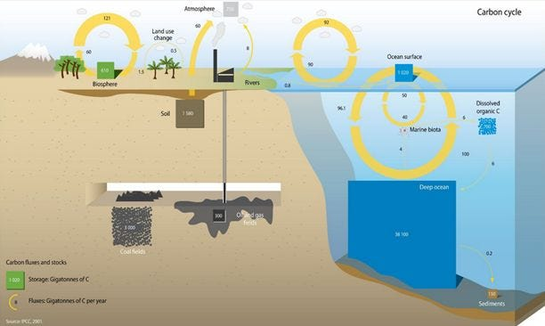
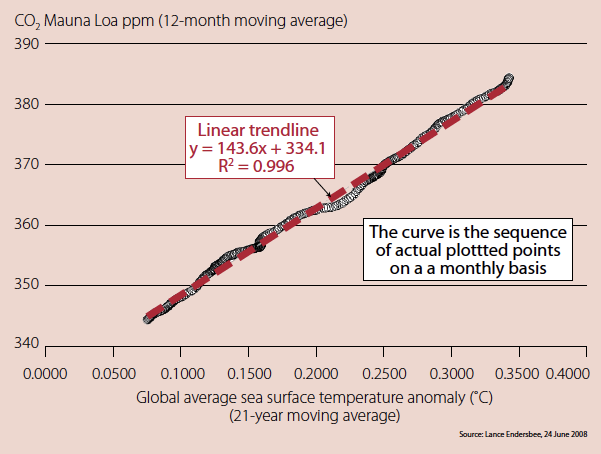
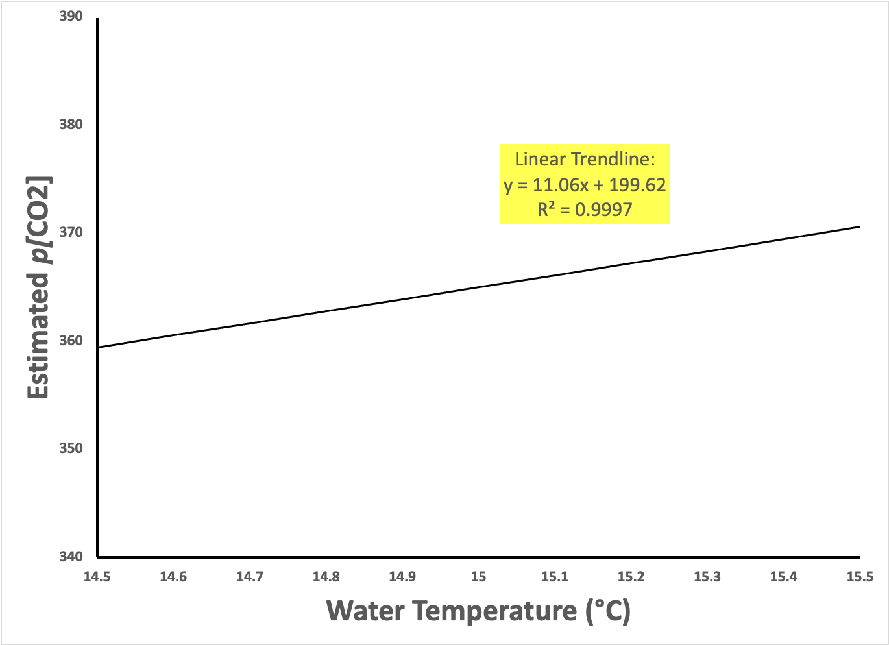

I’m Jonathan Burbaum, and this is Healing Earth with Technology: a weekly, Science-based, subscriber-supported serial. In this serial, I offer a peek behind the headlines of science, focusing (at least in the beginning) on climate change/global warming/decarbonization. I welcome comments, contributions, and discussions, particularly those that follow
Deming’s caveat
, “In God we trust. All others, bring data.” The subliminal objective is to open the scientific process to a broader audience so that readers can discover their own truth, not based on innuendo or
ad hominem
attributions but instead based on hard data and critical thought.
You can read Healing for free, and you can reach me directly by replying to this email.
If someone forwarded you this email, they’re asking you to sign up. You can do that by clicking
here
.
Like Science itself, I refer to facts established previously, so I recommend reading past posts in order if this is your first encounter. To catch up to this point will take approximately 53 minutes of your time in 10-minute chunks. [Or, of course, more, if you decide to think.]
“Once I asked him [Feynman] to explain to me, so that I could understand it, why spin-1/2 particles obey Fermi-Dirac statistics. Gauging his audience perfectly, he said, ‘I'll prepare a freshman lecture on it.’ But a few days later he came to me and said: ‘You know, I couldn't do it. I couldn't reduce it to the freshman level. That means we really don't understand it.’” David L. Goodstein, “Richard P. Feynman, Teacher”, from
Physics Today
42(2), 70-75 (1989).
The point of this anecdote is that, at the base of scientific understanding, is simplicity and clarity. Unless a concept can be taught without prerequisites, it’s still a work in progress. You’ll discover soon enough that, as a teacher, I’m no Feynman, but I will simplify and clarify concepts as much as possible to promote understanding.
A sub-story to this Substack:
Related to this serial, a subscriber and friend of mine from Olean High School (!)
Jeff Marra
alerted me to a dissenting opinion. [Jeff is also a Ph. D. chemist.] The counterpoint originated with another scientist, Bud Bromley, as posted on his LinkedIn feed
here
, and it is related to the second installment, “
2. Carbon. Hero or Villain?
”. Like me, Bud is not formally trained in climate science, and he based his dissent on data, so I figure it’s worth an open-minded discussion. Bud posted:

If humans never existed then the global average atmospheric CO2 concentration would be exactly the same as it is today. The total amount of CO2 in the atmosphere is independent of source of the CO2 and primarily dependent on ocean surface temperature. The amounts of CO2 in both air and ocean are determined by a ratio in Henry’s Gas Law, as well as ocean chemistry and physics. This does not imply that the atmosphere is free of anthropogenic CO2. About 8 gigatonnes (GT) per year of human CO2 are continuously and chaotically mixed with two giant fluxes of CO2 each over 90 GT per year, absorption of CO2 into ocean water surface and emission of CO2 from ocean surface water. Each flux is 10 times larger than human CO2 emission and these are mixed into 750 GT CO2 in air and 1020 GT CO2 in ocean surface. However, the addition of human CO2 to the atmosphere does not change the total amounts of CO2 in the atmosphere or in the ocean. Henry's Law ratio adjusts based on temperature, salinity/pH and pressure, and is independent of source of the CO2. Thus human CO2 is not responsible for global warming or cooling, global greening, glaciers melting, polar bears, social justice or any of the other claims either against it or favoring it.
For those of you that read the earlier installment, I’m a fan of carbon in all its forms, and this explanation, if true, could make my hero the victim rather than the villain. So, I was intrigued.
Bud and I engaged in a dialog of sorts over the past week, which you can track from the above post. [I’m going to disregard the violation of Conservation of Mass, where he claims that the addition of carbon dioxide doesn’t change the amounts on earth; I assume that he meant that the contribution by humans to total carbon dioxide from the combustion of geologic carbon is relatively small. I’m also not vouching for the numbers he cites, but I will grant that the numbers are big.] Here, let us track his main argument: He claims that the amount of carbon dioxide in air depends on
Henry’s Law
, a well-known equation that describes how much carbon dioxide dissolves in water. [Yeah. Math. Sorry.] As Bud points out, Henry’s Law means that carbon dioxide is released from seawater as the temperature goes up. But, because of the known chemistry of carbon dioxide, it’s complicated—not only does the gas itself dissolve in water, it also reacts with water to form carbonic acid, carbonate, and bicarbonate. I’m not here to teach chemistry, so let’s try to find a simple measurement without all of the complications. All we need is to measure the consequences of a change in seawater temperature on the amount of carbon dioxide in the air above it.
Essentially, Bud’s argument swaps the cause-and-effect relationship I put forth earlier, and that’s a fair point, at least on the surface. We agree that both temperature and atmospheric carbon dioxide have risen consistently since 1960, about 0.5°C and 100 ppm, respectively. Bud asserts that a warmer Earth (through an indeterminate mechanism) caused the release of carbon dioxide from the oceans, thus increasing the amount in the atmosphere. That’s certainly a possible explanation, in theory. Plus, as I’ve pointed out numerous times, Science has trouble establishing cause without an experiment, so the scientific question is, “Is the data consistent with Bud’s hypothesis and what we know about chemistry?” In our dialog, Bud cited data reported by Lance Endersbee, a prominent Australian engineer, published in a non-peer-reviewed publication in 2008.

Experience curve showing the dependence of atmospheric carbon dioxide on global average sea surface temperature using data from January 1985 to May 2008. Originally presented by Lance Endersbee. From ATSE Focus Vol. 151, August 2008, downloaded from the
web
.
If Bromley’s/Endersbee’s explanation is correct, then taking a sample of seawater into the lab, changing the temperature of the water, and measuring the carbon dioxide in the air should result in something like the graph shown above, a change of 144 ppm carbon dioxide per °C at the ocean’s surface (that’s the slope of the Endersbee graph above).
The best reference I could find on the subject
1
goes into a
lot
of gory detail about describing the results of exactly this experiment mathematically. In his defense, the author could not have published simpler results because Henry’s Law dates from the 19th century. Both carbon dioxide and seawater are complex but not complex enough to be novel, the
sine qua non
of scientific publication. The author derives a complicated equation that allows anyone to calculate the solubility constant (a ratio of how much carbon dioxide is dissolved in seawater versus how much is in the air above it) as a function of temperature. [I won’t burden you with the math, but I’m happy to provide my spreadsheet.] Let’s assume that the amount of all forms of carbon dioxide (gas, bicarbonate, and carbonate) in the ocean is much larger than in the air. In this case, warming the ocean’s surface will release a predictable amount of carbon. What do we see? The data:

From equations in Ref. 1. Since Endersbee does not provide absolute temperatures, I arbitrarily set a number of 365 ppm at 15°C to make the comparison.
I’ve kept the vertical scale the same as Endersbee’s but had to expand the horizontal scale to show the gradual slope, which is only ~11 (ppm carbon dioxide per °C) versus the expected 144. This tells me that the release of carbon dioxide from a warmer ocean
cannot
account for the rise in carbon dioxide in the atmosphere, at least not completely. So while there is an effect, and it’s in the right direction, it’s way too small.
It’s a legitimate question to ask, at this point, “Does this observation violate Henry’s Law?” Well, no. Henry’s Law describes a measurement made once the system has
stopped
changing, in a state that chemists call “equilibrium”. Bud's basic error is that the system of Earth is
always
changing. The enormous flows between the atmosphere and oceans do not prove that the system stabilizes quickly. In fact, carbon dioxide from the air dissolves and distributes slowly in seawater, much too slowly for Henry’s Law to apply. Bud’s explanation requires an Earth that has reached equilibrium. In fact, as I editorialized on LinkedIn, equilibrium is death: “At thermodynamic equilibrium, we are all dead.”
My hero Carbon cannot be acquitted by citing Henry’s Law. As always, you’re welcome to dissent, but please bring data.
As a side point, if you want me to talk nerdy to you, the chemical equilibrium of carbon dioxide would require the pH of the ocean to rise as carbon dioxide is removed. Instead, observations indicate that the pH of the ocean is falling, consistent with more carbon dioxide being added to the system.